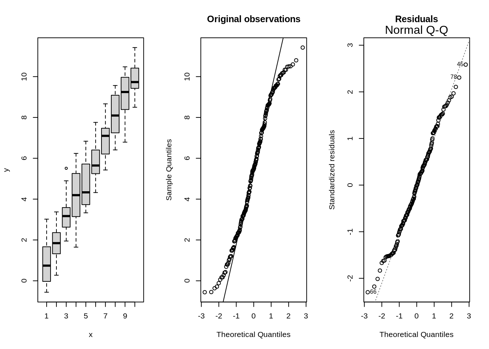
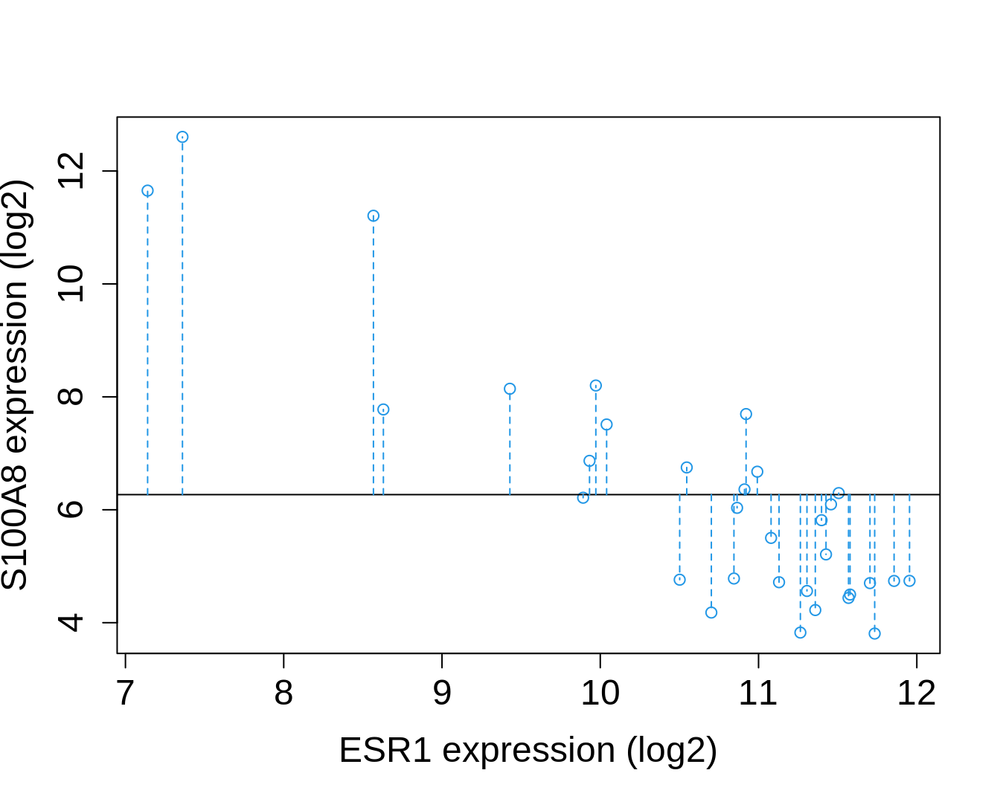
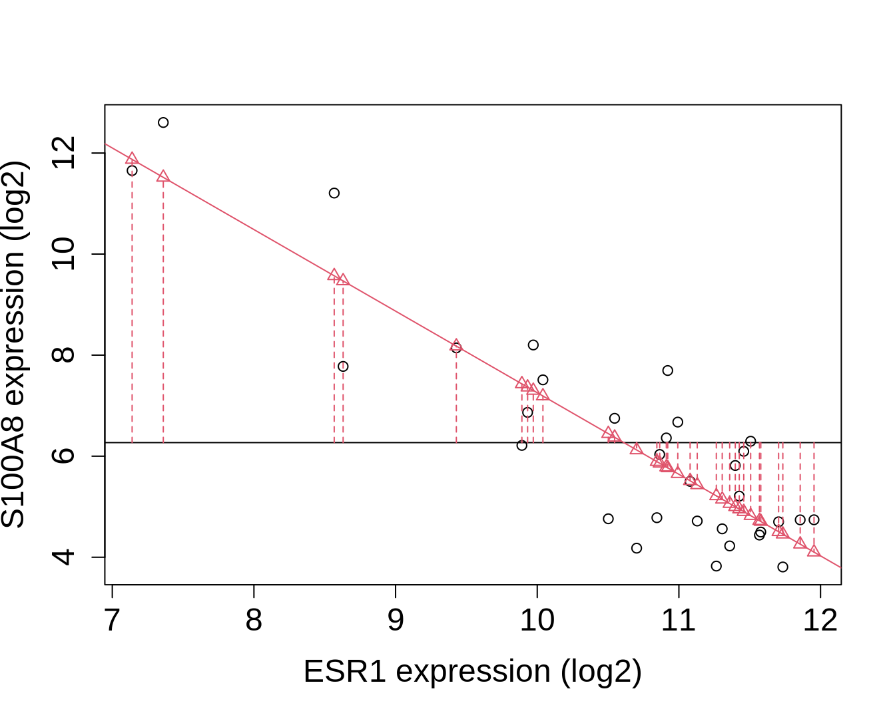

Breast cancer dataset
brca <- read_csv("https://raw.githubusercontent.com/GTPB/PSLS20/master/data/breastcancer.csv")
brca
- For didactical reasons we first remove 3 outliers in the S100A8 expression data.
- Later in the lecture we will show how to properly deal with all data.
brca %>% ggplot(aes(x="",y=S100A8)) +
geom_boxplot()

library(GGally)
brcaSubset<-brca %>% filter(S100A8<2000)
brcaSubset[,-(1:4)] %>% ggpairs()

Association between ESR1 and S100A8 expressie
ESR1 in \(\pm\) 75% of breast cancer tumors.
- Expression of ER gene positive for treatment: tumor responds to hormone therapy
- Tamoxifen interacts with ER and modulates gene expression.
Proteins of S100 family often dysregulated in cancer
- S100A8 expressie represses immune systeem in tumor en creates an environment of inflamation that promotes tumor growth.
Assess association between ESR1 and S100A8 expression.
- pipe dataset to ggplot
- select data
ggplot(aes(x=ESR1,y=S100A8))
- add points
geom_point()
- add smooth line
geom_smooth()
brcaSubset %>%
ggplot(aes(x=ESR1,y=S100A8)) +
geom_point() +
geom_smooth()

Lineair Regression
Statistical method to assess association between two variables \((X_i, Y_i)\), measured on each subject \(i = 1, ..., n\).
Gene expression example
- Response Y : S100A8 expression
- Predictor X: ESR1 expression
brcaSubset %>%
ggplot(aes(x=ESR1,y=S100A8)) +
geom_point() +
geom_smooth(se=FALSE,col="grey") +
geom_smooth(method="lm",se=FALSE)

Model
- For fixed \(X\), \(Y\) does not necessarly has the same value
\[\text{observation = signal + noise}\]
\[Y_i=g(X_i)+\epsilon_i\] - We define \(g(x)\) als the expected outcome for subjects with \(X_i=x\)
\[E[Y_i|X_i=x]=g(x)\]
Hence, \(\epsilon_i\) is on average 0 for subjects with same \(X_i\): \[E[\epsilon_i|X_i]=0\]
Lineair regression
- To obtain accurate and interpretable results one often choose \(g(x)\) to be a linear function with unknown parameter.
\[E(Y|X=x)=\beta_0 + \beta_1 x\]
unknown \(\beta_0\) and \(\beta_1\).
Lineair model imposes an assumption on the distribution of \(X\) and \(Y\), which can be invalid.
Efficient data-analysis: because it uses all observations to learn on the expected outcome for \(X=x\).
Use
Prediction: when \(Y\) is unknown but \(X\) is known we can predict \(Y\) using \[E(Y|X=x)=\beta_0 + \beta_1 x\]
Association: biological relation between variable \(X\) and response \(Y\)
Intercept: \(E(Y|X=0)=\beta_0\)
Slope: \[\begin{eqnarray*}
E(Y|X=x+\delta)-E(Y|X=x)&=&\beta_0 + \beta_1 (x+\delta) -\beta_0-\beta_1 x\\
&=& \beta_1\delta
\end{eqnarray*}\]
\(\beta_1=\) difference in mean outcome for subjects that differ in one unit of the predictor \(X\).
Parameter estimation
brcaSubset %>%
ggplot(aes(x=ESR1,y=S100A8)) +
geom_point() +
geom_smooth(se=FALSE,col="grey") +
geom_smooth(method="lm",se=FALSE)

\[SSE=\sum_{i=1}^n (y_i-\beta_0-\beta_1 x_i)^2=\sum_{i=1}^n e_i^2\]
with residuals \(e_i\) the vertical distances from the observations to the fitted regression line
Estimators that minimise SSE
\[\hat{\beta_1}= \frac{\sum\limits_{i=1}^n (y_i-\bar y)(x_i-\bar x)}{\sum\limits_{i=1}^n (x_i-\bar x_i)^2}=\frac{\mbox{cor}(x,y)s_y}{s_x} \]
\[\hat{\beta_0}=\bar y - \hat{\beta}_1 \bar x \]
Note, that the slope of the least squares fit is proportional to the correlation between the response and the predictor.
Fitted model allows to:
predict the response for subjects with a given value \(x\) for the predictor: \[\text{E} [ Y | X = x]=\hat{\beta}_0+\hat{\beta}_1x\]
Assess how the mean response differs between two groups of subjects that differ \(\delta\) units in the predictor:
\[\text{E}\left[Y|X=x+\delta\right]-\text{E}\left[Y|X=x\right]= \hat{\beta}_1\delta\]
Breast cancer example
lm1 <- lm(S100A8~ESR1,brcaSubset)
summary(lm1)
Call:
lm(formula = S100A8 ~ ESR1, data = brcaSubset)
Residuals:
Min 1Q Median 3Q Max
-95.43 -34.81 -6.79 34.23 145.21
Coefficients:
Estimate Std. Error t value Pr(>|t|)
(Intercept) 208.47145 28.57207 7.296 7.56e-08 ***
ESR1 -0.05926 0.01212 -4.891 4.08e-05 ***
---
Signif. codes: 0 '***' 0.001 '**' 0.01 '*' 0.05 '.' 0.1 ' ' 1
Residual standard error: 59.91 on 27 degrees of freedom
Multiple R-squared: 0.4698, Adjusted R-squared: 0.4502
F-statistic: 23.93 on 1 and 27 DF, p-value: 4.078e-05
\[E(Y|X=x)=208.47-0.059 x\]
Expected S100A8 expression is on average 59 units lower for patients with ESR1 expression level that is 1000 units higher
Expected S100A8 expression level for patients with an ESR1 expression level of 2000: \[208.47-0.059\times 2000=89.94\]
Expected S100A8 expression level for patients with an ESR1 expression level of 4000: \[208.47-0.059\times 4000=-28.58\]
Be careful when you extrapolate! (We can only assess the assumption of linearity within the range of the data).
Statistical inference
To draw conclusions based on the regression model \[E(Y|X)=\beta_0+\beta_1 X\] we need to know
How the least squares parameter estimators vary from sample to sample, and
how they deviate under the null hypothesis that there is no association between predictor and response
Requires a statistical model
Model the distribution of \(Y\) given \(X\) explicitly: f_{Y|X}(y)
Modelling distribution of Y?
- Besides Linearity we need additional assumptions!
- Independence: Observations \((X_1,Y_1), ..., (X_n,Y_n)\) are made for n independent subjects (is required to estimate the variance)
- Homoscedasticity or equal variances: observations vary with equal mean around the regression line
- Residuals \(\epsilon_i\) have equal variance for each \(X_i=x\)
- \(\text{var}(Y\vert X=x) = \sigma^2\) for each \(X=x\)
- \(\sigma\) is referred to as the residual standard deviation
- Normality: the residuals \(\epsilon_i\) are normally distributed

Given 2, 3 and 4 \[\epsilon_i \text{ i.i.d.} N(0,\sigma^2).\]
Together with 1 this implies: \[Y_i\vert X_i\sim N(\beta_0+\beta_1 X_i,\sigma^2),\]
We can show that given these assumption \[\sigma^2_{\hat{\beta}_0}=\frac{\sum\limits_{i=1}^n X^2_i}{\sum\limits_{i=1}^n (X_i-\bar X)^2} \times\frac{\sigma^2}{n} \text{ en } \sigma^2_{\hat{\beta}_1}=\frac{\sigma^2}{\sum\limits_{i=1}^n (X_i-\bar X)^2}\]
and the parameter estimators are also normally distributed \[\hat\beta_0 \sim N\left(\beta_0,\sigma^2_{\hat \beta_0}\right) \text{ en } \hat\beta_1 \sim N\left(\beta_1,\sigma^2_{\hat \beta_1}\right)\]
High spread of \(X\) improves the precision
\[\sigma^2_{\hat{\beta}_1}=\frac{\sigma^2}{\sum\limits_{i=1}^n (X_i-\bar X)^2}\]

- Conditional variance (\(\sigma^2\)) is unknown
- Estimate using mean squared error (MSE) \[\hat\sigma^2=MSE=\frac{\sum\limits_{i=1}^n \left(y_i-\hat\beta_0-\hat\beta_1\times x_i\right)^2}{n-2}=\frac{\sum\limits_{i=1}^n e^2_i}{n-2}.\]
- This estimator is based on independence (assumption 2) and equality of the variance (assumption 3).
- Devide by \(n-2\)
Upon the estimation of \(\sigma^2\) we obtain following standard errors:
\[\text{SE}_{\hat{\beta}_0}=\hat\sigma_{\hat{\beta}_0}=\sqrt{\frac{\sum\limits_{i=1}^n X^2_i}{\sum\limits_{i=1}^n (X_i-\bar X)^2} \times\frac{\text{MSE}}{n}} \text{ en } \text{SE}_{\hat{\beta}_1}=\hat\sigma_{\hat{\beta}_1}=\sqrt{\frac{\text{MSE}}{\sum\limits_{i=1}^n (X_i-\bar X)^2}}\]
Again we can construct tests and confidence intervals using \[T=\frac{\hat{\beta}_k-\beta_k}{SE(\hat{\beta}_k)} \text{ with } k=1,2.\]
If all assumptions are valid \(T\) follows t-verdeling with n-2 degrees of freedom.
If no normality, but independence, linearity, equality of mean and large dataset \[\rightarrow \text{Central Limit theorem}\]
Breast cancer example
Negative association between S100A8 and ESR1 gene expression.
Generalize effect in sample to population using the confidence interval on the mean: \[[\hat\beta_1 - t_{n-2,\alpha/2} \text{SE}_{\hat\beta_1},\hat\beta_1 + t_{n-2,\alpha/2} \text{SE}_{\hat\beta_1}]\].
2.5 % 97.5 %
(Intercept) 149.84639096 267.09649989
ESR1 -0.08412397 -0.03440378
- Negative association is significant on 5% significance level.
Hypothesis test
Translate the research question to assess the association between the S100A8 and ESR1 gene expression to parameters in the model.
Under the null hypothesis of the absence of an association in the expression of both genes: \[H_0: \beta_1=0\]
Under the alternative hypothesis, there is an association between the expression of both genes : \[H_1: \beta_1\neq0\]
Test statistic \[T=\frac{\hat{\beta}_1-0}{SE(\hat{\beta}_k)}\]
Under \(H_0\) the statistics follows a t-distribution with n-2 degrees of freedom.
BRCA dataset
Call:
lm(formula = S100A8 ~ ESR1, data = brcaSubset)
Residuals:
Min 1Q Median 3Q Max
-95.43 -34.81 -6.79 34.23 145.21
Coefficients:
Estimate Std. Error t value Pr(>|t|)
(Intercept) 208.47145 28.57207 7.296 7.56e-08 ***
ESR1 -0.05926 0.01212 -4.891 4.08e-05 ***
---
Signif. codes: 0 '***' 0.001 '**' 0.01 '*' 0.05 '.' 0.1 ' ' 1
Residual standard error: 59.91 on 27 degrees of freedom
Multiple R-squared: 0.4698, Adjusted R-squared: 0.4502
F-statistic: 23.93 on 1 and 27 DF, p-value: 4.078e-05
- The association between the S100A8 and ESR1 expression is extremely significant (p<<0.001).
- But, we first have to check all assumptions!
- Otherwise the conclusions based on the statistical test and the CI can be incorrect.
Assess assumptions
- Independence: design
- Linearity: inference is useless if the association is not linear
- Homoscedasticity: inference/p-value is incorrect if data are heteroscedastic
- Normality: inference/p-value is incorrect if data are not normally distributed in small samples
Linearity
brcaSubset %>%
ggplot(aes(x=ESR1,y=S100A8)) +
geom_point() +
geom_smooth(se=FALSE,col="grey") +
geom_smooth(method="lm",se=FALSE)

Homoscedasticity (equal variances)
Residuals and squared residuals cary information on the residual variability
Association with predictors \(\rightarrow\) indication of heteroscedasticity.
Scatterplot of \(e_i\) vs \(x_i\) or predictions \(\hat \beta_0+ \hat \beta_1 x_i\).
Scatterplot van standardized residual versus \(x_i\) or predictions.
Normality
If the sample size is large the estimators are normally distributed even if the observations are not normally distributed: central limit theorem
How many observations? \(\rightarrow\) depends on shape and magnitude of deviations
Assumption: Data are Normally distributed conditional on X: \[Y_i\vert X_i\sim N(\beta_0+\beta_1X_i,\sigma^2)\]
QQ-plot of response Y is misleading and useless: distribution of \(Y_i\) are different because they have a different conditional mean!
QQ-plot of the residuals \(e_i\)


Invalid assumptions
Transformation of predictor does not change distribution of Y for given X:
- not useful to obtain homoscedasticity or Normal distribution
- useful for linearity when normality and homoscedasticity are valid
- Often inclusion of higher order terms: \(X^2\), \(X^3\), … \[Y_i=\beta_0+\beta_1X_i+\beta_2X_i^2+ ... + \epsilon_i\]
Transformation of response Y can be useful to obtain normality and homoscedasticity
\(\sqrt(Y)\), \(\log(Y)\), 1/Y, …
Breast cancer example
Problems with
- heteroscedasticity
- possibly deviations from normality (skewed to the right)
- negative concentration predictions are theoretically impossible
- non-linearity
This is often the case for concentration and intensity measurements
- These are often log-normal distributed (normal distribution upon log-transformatie)
- We also observed a kind of exponential relation with the smoother
- In gene expression literature often \(\log_2\) transformation is adopted
- gene-expression on log scale: differences on log scale are fold changes on original scale!
brca %>% ggplot(aes(x=ESR1,y=S100A8)) +
geom_point() +
geom_smooth()

brca %>% ggplot(aes(x=ESR1%>%log2,y=S100A8%>%log2)) +
geom_point() +
geom_smooth()

lm2<-lm(S100A8%>%log2 ~ ESR1 %>% log2, brca)
plot(lm2)


Call:
lm(formula = S100A8 %>% log2 ~ ESR1 %>% log2, data = brca)
Residuals:
Min 1Q Median 3Q Max
-1.94279 -0.66537 0.08124 0.68468 1.92714
Coefficients:
Estimate Std. Error t value Pr(>|t|)
(Intercept) 23.401 1.603 14.60 3.57e-15 ***
ESR1 %>% log2 -1.615 0.150 -10.76 8.07e-12 ***
---
Signif. codes: 0 '***' 0.001 '**' 0.01 '*' 0.05 '.' 0.1 ' ' 1
Residual standard error: 1.026 on 30 degrees of freedom
Multiple R-squared: 0.7942, Adjusted R-squared: 0.7874
F-statistic: 115.8 on 1 and 30 DF, p-value: 8.07e-12
2.5 % 97.5 %
(Intercept) 20.128645 26.674023
ESR1 %>% log2 -1.921047 -1.308185
Interpretation 1
A patient with an ESR1 expression that is one unit on \(\log_2\) scale higher than that of another patient on average has a \(\log_2\) expression for S100A8 that is 1.61 units lower (95% CI [-1.92,-1.31]).
\[\log_2 \hat\mu_1=23.401 -1.615 \times \text{logESR}_1,\text{ } \log_2 \hat\mu_2=23.401 -1.615 \times \text{logESR}_2 \] \[\log_2 \hat\mu_2-\log_2 \hat\mu_1= -1.615 (\log_2 \text{ESR}_2-\log_2 \text{ESR}_1) = -1.615 \times 1 = -1.615\]
Interpretation 2
Model on log-scale: upon back-transformation we obtain geometric means
\[\begin{eqnarray*}
\sum\limits_{i=1}^n \frac{\log x_i}{n}&=&\frac{\log x_1 + \ldots + \log x_n}{n}\\\\
&\stackrel{(1)}{=}&\frac{\log(x_1 \times \ldots \times x_n)}{n}=\frac{\log\left(\prod\limits_{i=1}^n x_i\right)}{n}\\\\
&\stackrel{(2)}{=}&\log \left(\sqrt[\leftroot{-1}\uproot{2}\scriptstyle n]{\prod\limits_{i=1}^n x_i}\right)
\end{eqnarray*}\]
- Population mean \(\mu\) is estimated as a geometric mean
- Logarithmic transformation is monotone: we can backtransform confidence intervals on log-scale!
ESR1 %>% log2
0.3265519
ESR1 %>% log2
3.0623
2.5 % 97.5 %
3.786977 2.476298
A patient with an ESR1 expression that is 2 times the expression of that of another patient will on average have an S100A8 expression that is 3.06 times lower (95% CI [2.48,3.79]).
\[\log_2 \hat\mu_1=23.401 -1.615 \times \text{logESR}_1,\text{ } \log_2 \hat\mu_2=23.401 -1.615 \times \text{logESR}_2 \] \[\log_2 \hat\mu_2-\log_2 \hat\mu_1= -1.615 (\log_2 \text{ESR}_2-\log_2 \text{ESR}_1) \] \[\log_2 \left[\frac{\hat\mu_2}{\hat\mu_1}\right]= -1.615 \log_2\left[\frac{ \text{ESR}_2}{\text{ESR}_1}\right] \] \[\frac{\hat\mu_2}{\hat\mu_1}=\left[\frac{ \text{ESR}_2}{\text{ESR}_1}\right]^{-1.615}=2^ {-1.615} =0.326\] or \[\frac{\hat\mu_1}{\hat\mu_2}=2^{1.615} =3.06\]
Interpretation 3
A patient with an ESR1 expression that is 1% higher than that of another patient will on average have an expression-level for S100A8 gen that is approximately -1.61% lower (95% CI [-1.92,-1.31])%.
\[\log_2 \hat\mu_1=23.401 -1.615 \times \text{logESR}_1,\text{ } \log_2 \hat\mu_2=23.401 -1.615 \times \text{logESR}_2 \] \[\log_2 \hat\mu_2-\hat\log_2 \mu_1= -1.615 (\log_2 \text{ESR}_2-\log_2 \text{ESR}_1) \] \[\log_2 \left[\frac{\hat\mu_2}{\hat\mu_1}\right]= -1.615 \log_2\left[\frac{ \text{ESR}_2}{\text{ESR}_1}\right] \] \[\frac{\hat\mu_2}{\hat\mu_1}=\left[\frac{ \text{ESR}_2}{\text{ESR}_1}\right]^{-1.615}=1.01^ {-1.615} =0.984 \approx -1.6\%\]
This is valid for low to moderate values of \(\beta_1\): \[-10<\beta_1<10 \rightarrow 1.01^{\beta_1} -1 \approx \frac{\beta_1}{100}.\]
Inference on the mean outcome
- A regression model can also be used for prediction
- Inference on average outcome for a given value of \(X=x\), i.e. \[\hat{g}(x)= \hat{\beta}_0 + \hat{\beta}_1 x\]
- \(\hat{g}(x)\) is an estimator of the conditional mean \(E[Y\vert X=x]\)
- Parameter estimators are Normally distributed and unbiased \(\rightarrow\) estimator \(\hat{g}(x)\) is also Normally distributed and unbiased.
\[\text{SE}_{\hat{g}(x)}=\sqrt{MSE\left\{\frac{1}{n}+\frac{(x-\bar X)^2}{\sum\limits_{i=1}^n (X_i-\bar X)^2}\right\}}.\]
\[T=\frac{\hat{g}(x)-g(x)}{SE_{\hat{g}(x)}}\sim t_{n-2}\]
- Mean response and confidence intervals for the mean response in R via de
predict(.) functie.
newdata argument: predictor values (x-values) at which we want to calculate the mean responseinterval="confidence" argument to obtain CI.- Without newdata argument we perform predictions for all predictor values in the dataset used to fit the model.
grid <- 140:4000
g <- predict(lm2,newdata=data.frame(ESR1=grid), interval="confidence")
head(g)
fit lwr upr
1 11.89028 10.76082 13.01974
2 11.87370 10.74721 13.00019
3 11.85724 10.73370 12.98078
4 11.84089 10.72028 12.96151
5 11.82466 10.70696 12.94237
6 11.80854 10.69372 12.92336
Note, that we do not have to transform the new data that we specified for the ESR1 expression because we fitted the model with a call to the lm function and specified the transformation within the lm formula using the pipe command!
brca %>% ggplot(aes(x=ESR1%>%log2,y=S100A8%>%log2)) +
geom_point() +
geom_smooth(method="lm")

Prediction-intervals
We can also make a prediction for the location of a new observation that would be collected in a new experiment for a patient with a particular value for their ESR1 expression
It is important to notice that this experiment still has to be conducted. So we want to predict the non-observed individual expression value for a novel patient.
For a novel independent observation \(Y^*\) \[
Y^* = g(x) + \epsilon^*
\] with \(\epsilon^*\sim N(0,\sigma^2)\) and \(\epsilon^*\) independent of the observations in the sample \(Y_1,\ldots, Y_n\).
We predict a new log-S100A8 for a patient with a known log2-ESR1 expression level x \[
\hat{y}(x)=\hat{\beta}_0+\hat{\beta}_1 \times x
\]
The estimated mean outcome and prediction for a new observation are equal.
But, their sample distributions are different!
- Uncertainty on the estimated mean outcome \(\leftarrow\) uncertainty on estimated model parameters \(\hat\beta_0\) en \(\hat\beta_1\).
- Uncertainty on new observation $ \(\leftarrow\) uncertainty on estimated mean and additional uncertainty because the new observation will deviate around the mean!
\[\text{SE}_{\hat{Y}(x)}=\sqrt{\hat\sigma^2+\hat\sigma^2_{\hat{g}(x)}}=\sqrt{MSE\left\{1+\frac{1}{n}+\frac{(x-\bar X)^2}{\sum\limits_{i=1}^n (X_i-\bar X)^2}\right\}}.\]
\[\frac{\hat{Y}(x)-Y}{\text{SE}_{\hat{Y}(x)}}\sim t_{n-2}\]
- Note, that a prediction-interval (PI) is an improved version of a reference-interval when the model parameters are unknown: Uncertainty on model parameters + t-distribution.
p <- predict(lm2,newdata=data.frame(ESR1=grid), interval="prediction")
head(p)
fit lwr upr
1 11.89028 9.510524 14.27004
2 11.87370 9.495354 14.25205
3 11.85724 9.480288 14.23419
4 11.84089 9.465324 14.21646
5 11.82466 9.450461 14.19886
6 11.80854 9.435698 14.18138
preddata<-data.frame(cbind(grid=grid%>%log2,p))
brca %>% ggplot(aes(x=ESR1%>%log2,y=S100A8%>%log2)) +
geom_point() +
geom_smooth(method="lm") +
geom_line(aes(x=grid,y=lwr),preddata,color="blue") +
geom_line(aes(x=grid,y=upr),preddata,color="blue")

preddata<-data.frame(cbind(grid,2^p))
brca %>% ggplot(aes(x=ESR1,y=S100A8)) +
geom_point() +
geom_line(aes(x=grid,y=fit),newdata) +
geom_line(aes(x=grid,y=lwr),newdata,color="grey") +
geom_line(aes(x=grid,y=upr),newdata,color="grey") +
geom_line(aes(x=grid,y=lwr),preddata,color="blue") +
geom_line(aes(x=grid,y=upr),preddata,color="blue")

NHANES example
library(NHANES)
fem <- NHANES %>% filter(Gender=="female"&!is.na(DirectChol))
exp(fem$DirectChol%>%log%>%mean + c(-1,1)* qnorm(0.975) * (fem$DirectChol%>%log%>%sd))
[1] 0.8361311 2.4397130
lmChol <- lm(DirectChol %>% log2~1,data=fem)
predInt <- predict(lmChol,interval="prediction",newdata=data.frame(noPred=1))
round(2^predInt,2)
fit lwr upr
1 1.43 0.84 2.44
Note, that the prediction interval is almost similar to the reference interval for the large sample. Indeed we could estimate the parameters very precise.
We will do the same thing for the small sample size of 10 patients.
set.seed(1)
fem10<- NHANES %>% filter(Gender=="female"&!is.na(DirectChol)) %>% sample_n(size=10)
2^(fem10$DirectChol%>%log2%>%mean + c(-1,1)* qnorm(0.975) * (fem10$DirectChol%>%log2%>%sd))
[1] 0.8976012 2.2571645
lmChol10 <- lm(DirectChol %>% log2~1,data=fem10)
predInt10 <- predict(lmChol10,interval="prediction",newdata=data.frame(noPred=1))
round(2^predInt10,2)
fit lwr upr
1 1.42 0.81 2.49
Note, that the PI now captures uncertainty in parameter estimators (mean and standard error). And that the interval becomes much wider! This is particularly important here for the upper limit because we back-transformed the data!
The interval is almost as wide as the one based on the large sample.
In small samples it is very important to account for this additional uncertainty.
Sum of squares and Anova-table
##Total sum of squares \[\text{SSTot} = \sum_{i=1}^n (Y_i-\bar{Y})^2.\]
SStot can be used to estimate the variance of the marginal distribution of the response.
In this chapter we focused on the conditional distribution \(f(Y\vert X=x)\).
We known that MSE is a good estimate of the variance of the conditional distribution of \(Y\vert X=x\).

Sum of squares of the regression SSR
\[\text{SSR} = \sum_{i=1}^n (\hat{Y}_i - \bar{Y})^2 = \sum_{i=1}^n (\hat{g}(x_i) - \bar{Y})^2.\]
Is a measure for the deviation of the predictions on the regression line and the marginal mean of the response.
Another interpretation: difference between two models
- Estimated model \(\hat{g}(x)=\hat\beta_0+\hat\beta_1x\)
- Estimated model without predictor (only intercept): \(g(x)=\beta_0\) \(\rightarrow\) \(\beta_0\) will be equal to \(\bar{Y}\).
SSR measures the size of the effect of the predictor

Sum of Squares of the Error
\[ \text{SSE} = \sum_{i=1}^n (Y_i-\hat{Y}_i )^2 = \sum_{i=1}^n \left\{Y_i-\hat{g}\left(x_i\right)\right\}^2.\]
We can show that SST can be decomposed in \[\begin{eqnarray*}
\text{SSTot}
&=& \sum_{i=1}^n (Y_i-\bar{Y})^2 \\
&=& \sum_{i=1}^n (Y_i-\hat{Y}_i+\hat{Y}_i-\bar{Y})^2 \\
&=& \sum_{i=1}^n (Y_i-\hat{Y}_i)^2+\sum_{i=1}^n(\hat{Y}_i-\bar{Y})^2 \\
&=& \text{SSE }+\text{SSR}
\end{eqnarray*}\]
- Total variability in the data (SSTot) is partially explained by the predictor (SSR).
- Variability that we cannot explain with the regression model is the residual variability (SSE).
Determination coefficient
\[ R^2 = 1-\frac{\text{SSE}}{\text{SSTot}}=\frac{\text{SSR}}{\text{SSTot}}.\]
Fraction of total variability of the sample outcomes explained by the model.
Large \(R^2\) indicates that the model has the potential to make good predictions (small SSE).
Not very indicative for p-value of the test \(H_0:\beta_1=0\) vs \(H_1:\beta_1\neq0\).
- p-value is largely determined by SSE and sample size \(n\), but not by SSTot.
- \(R^2\) is determined by SSE and SSTot but not by sample size \(n\).
Model with low \(R^2\) is still useful to study associations as long as the association is modelled correctly!
Breast cancer example
Call:
lm(formula = S100A8 %>% log2 ~ ESR1 %>% log2, data = brca)
Residuals:
Min 1Q Median 3Q Max
-1.94279 -0.66537 0.08124 0.68468 1.92714
Coefficients:
Estimate Std. Error t value Pr(>|t|)
(Intercept) 23.401 1.603 14.60 3.57e-15 ***
ESR1 %>% log2 -1.615 0.150 -10.76 8.07e-12 ***
---
Signif. codes: 0 '***' 0.001 '**' 0.01 '*' 0.05 '.' 0.1 ' ' 1
Residual standard error: 1.026 on 30 degrees of freedom
Multiple R-squared: 0.7942, Adjusted R-squared: 0.7874
F-statistic: 115.8 on 1 and 30 DF, p-value: 8.07e-12
F-Test in simple linear model
- Sum of squares are the bases for \(F\)-tests \[ F = \frac{\text{MSR}}{\text{MSE}}\]
with \(\text{MSR} = \frac{\text{SSR}}{1} \text{ and } \text{MSE} = \frac{\text{SSE}}{n-2}.\)
MSR mean sum of squares of the regression,
denominators 1 en \(n-2\) are the degrees of freedom of SSR and SSE.
Under \(H_0: \beta_1=0\) \[H_0:F = \frac{\text{MSR}}{\text{MSE}} \sim F_{1,n-2},\]
F-test is always two-sided! \(H_1:\beta_1\neq 0\) \[ p = P_0\left[F\geq f\right]=1-F_F(f;1,n-2)\]
Call:
lm(formula = S100A8 %>% log2 ~ ESR1 %>% log2, data = brca)
Residuals:
Min 1Q Median 3Q Max
-1.94279 -0.66537 0.08124 0.68468 1.92714
Coefficients:
Estimate Std. Error t value Pr(>|t|)
(Intercept) 23.401 1.603 14.60 3.57e-15 ***
ESR1 %>% log2 -1.615 0.150 -10.76 8.07e-12 ***
---
Signif. codes: 0 '***' 0.001 '**' 0.01 '*' 0.05 '.' 0.1 ' ' 1
Residual standard error: 1.026 on 30 degrees of freedom
Multiple R-squared: 0.7942, Adjusted R-squared: 0.7874
F-statistic: 115.8 on 1 and 30 DF, p-value: 8.07e-12

Anova Table
| Regression |
degrees of freedom SSR |
SSR |
MSR |
f-statistic |
p-value |
| Error |
degrees of freedom SSE |
SSE |
MSE |
|
|
Dummy variables
Linear regression model can also be used to compare two group means.
brca: difference in average age between patients with unaffected and affected lymph nodes.
Define dummy variabele \[x_i = \left\{ \begin{array}{ll}
1 & \text{affected lymph nodes} \\
0 & \text{unaffected lymph nodes} \end{array}\right.\]
group with \(x_i=0\) is referred to as the reference group.
Regression model remains unaltered, \[Y_i = \beta_0 + \beta_1 x_i +\epsilon_i\] with \(\epsilon_i \text{ iid } N(0,\sigma^2)\)
Because \(x_i\) only can take two values, we can study the regression model for each value of \(x_i\) separately: \[ \begin{array}{lcll}
Y_i &=& \beta_0 +\epsilon_i &\text{unaffected lymph nodes} (x_i=0) \\
Y_i &=& \beta_0 + \beta_1 +\epsilon_i &\text{ affected lymph nodes} (x_i=1) .
\end{array}\] So \[\begin{eqnarray*}
E\left[Y_i\mid x_i=0\right] &=& \beta_0 \\
E\left[Y_i\mid x_i=1\right] &=& \beta_0 + \beta_1,
\end{eqnarray*}\]
Hence, the interpretation of \(\beta_1\): \[ \beta_1 = E\left[Y_i\mid x_i=1\right]-E\left[Y_i\mid x_i=0\right]\]
\(\beta_1\) is the average age difference between patients with affected and patients with unaffected lymph nodes (reference group).
With notation \(\mu_0= E\left[Y_i\mid x_i=0\right]\) and \(\mu_1= E\left[Y_i\mid x_i=1\right]\) this becomes \[\beta_1 = \mu_1-\mu_0.\]
We can show that \[\begin{array}{ccll}
\hat\beta_0
&=& \bar{Y}_1&\text{ (sample mean of reference group)} \\
\hat\beta_1
&=& \bar{Y}_2-\bar{Y}_1&\text{(estimator of effect size)} \\
\text{MSE}
&=& S_p^2 .
\end{array}\]
Tests \(H_0:\beta_1=0\) vs. \(H_1:\beta_1\neq0\) can be used to assess the null hypothesis of the two-sample \(t\)-test, \(H_0:\mu_1=\mu_2\) vs \(H_1:\mu_1\neq\mu_2\).
brca$node <- as.factor(brca$node)
t.test(age~node,brca,var.equal=TRUE)
Two Sample t-test
data: age by node
t = -2.7988, df = 30, p-value = 0.008879
alternative hypothesis: true difference in means between group 0 and group 1 is not equal to 0
95 percent confidence interval:
-15.791307 -2.467802
sample estimates:
mean in group 0 mean in group 1
59.94737 69.07692
lm3 <- lm(age~node,brca)
summary(lm3)
Call:
lm(formula = age ~ node, data = brca)
Residuals:
Min 1Q Median 3Q Max
-19.9474 -5.3269 0.0526 5.3026 18.0526
Coefficients:
Estimate Std. Error t value Pr(>|t|)
(Intercept) 59.947 2.079 28.834 < 2e-16 ***
node1 9.130 3.262 2.799 0.00888 **
---
Signif. codes: 0 '***' 0.001 '**' 0.01 '*' 0.05 '.' 0.1 ' ' 1
Residual standard error: 9.063 on 30 degrees of freedom
Multiple R-squared: 0.207, Adjusted R-squared: 0.1806
F-statistic: 7.833 on 1 and 30 DF, p-value: 0.008879


brca %>% ggplot(aes(x=node%>%as.factor,y=age)) +
geom_boxplot()

par(mfrow=c(3,3))
set.seed(354)
for(i in 1:9) plot(rnorm(32)~node,brca,ylab="iid N(0,1)")

Observational study
We cannot conclude that age causes a higher risk for affected lymph nodes.
Possibly confounding: no randomisation \(\rightarrow\) groups of patients with affected and unaffected lymph nodes. They can also differ in other characteristics.
We can only conclude that there is an association between lymph node status and age.
However, the association does not have to be causal!
Note, that this is also the case for the linear model for \(\log_2\)-S100A8-expression.
- Because we were not able to fix the ESR1-expression experimentally we cannot conclude that a higher ESR1-expression causes a decrease in the S100A8-expression.
- We can only conclude that there is a negative association.
- To assess the impact of a gene on other gene typically knockout mutants are used in the lab.
